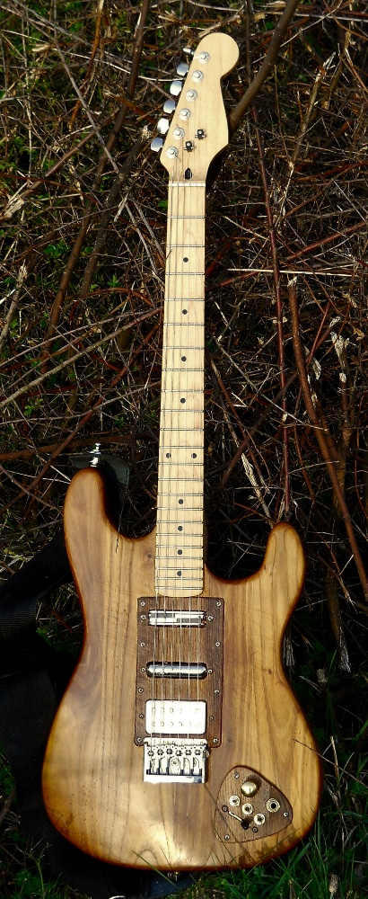

These pages describe how I built an electric guitar, the body of which was
made from wood salvaged from an old Italian wine vat (tino). I bought
the neck & hardware, I don't really have the skills or equipment for those
bits...yet. Main construction was in two phases. In the first phase I got the
instrument together and essentially working, but without final shaping and
surface finishing. In the second phase, with the benefit of a few months
playing the guitar, I did the final shaping of the body along with minor
modifications and the surface finishing. Later I did a fair bit of tweaking,
experimenting with pickups etc.
Contents
- Main Build
- Finishing the Vinocaster
- Update/Lessons learnt (in progress)
- The Vinotone, a custom effects box for the Vinocaster (in progress)
- Video : the Vinocaster in action
- Links : parts , books & suppliers @@todo
- Sample Audio @@todo link to mp3s here
- Related photos on Flickr
